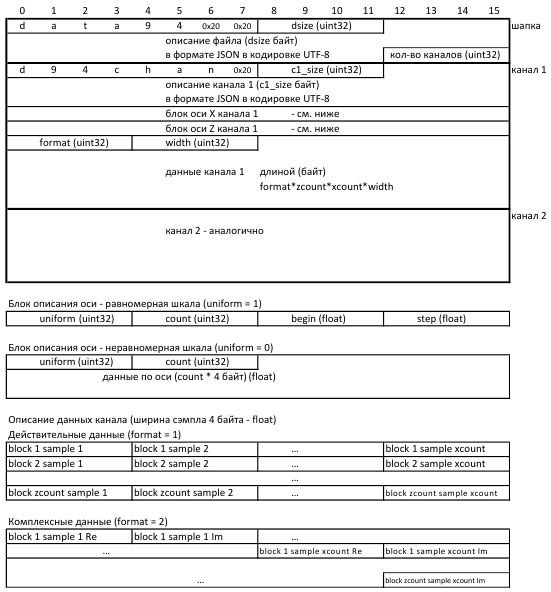

DeepSea Base
DeepSea Base поддерживает работу с файлами следующих типов:
- Файлы DeepSea (*.dfd + *.raw)
- Файлы Universal File Format текстового формата (*.uff)
- Файлы Data94 (*.d94) - двоичный формат, специально разработанный для использования в DeepSea Base. Он позволяет сохранять данные разного формата - временные реализации, комплексные спектры, время-частотные характеристики, октавные спектры и т.д. Описание формата смотри здесь.
- Файлы Wave (*.wav). DeepSea Base поддерживает чтение и конвертацию файлов этого типа, но не поддерживает их изменение.
- Файлы ANP (*.anp + *.ana). DeepSea Base поддерживает чтение и конвертацию файлов этого типа, но не поддерживает их изменение.
Добавление и удаление записей
Добавить записи в базу можно как в текущую вкладку, так и в новую. Можно добавлять:
- Записи из папки (Ctrl+O)
- Записи из папки и всех вложенных в нее папок
- Файлы по одному / по нескольку
Добавлять записи в базу можно также перетаскиванием файлов из проводника.
Добавленные файлы или папки будут восстановлены после закрытия программы.
Чтобы удалить запись/записи, выделите ее/их в таблице записей и нажмите Del.
Добавленные пути (отдельные файлы и папки) можно просмотреть, нажав правой кнопкой мыши на заголовке вкладки и выбрав пункт "Отслеживаемые файлы и папки". Откроется диалоговое окно, в котором отображаются все добавленные во вкладку записи. Отдельные пути можно удалить, выделив их в таблице и нажав Del или кнопку "Убрать из отслеживаемых".
Сортировка и фильтрация записей
Программа поддерживает сортировку записей по любому столбцу. Сортировка численных столбцов и столбца даты/времени учитывает значения, а не их текстовые представления (правильная сортировка чисел).
Кнопка в таблице записей позволяет фильтровать записи. Использование нескольких полей позволяет осуществлять каскадную фильтрацию (например, по двум столбцам).
Изменение информации о записях
Для редактирования доступны следующие поля в таблице записей:
- Дата и время создания записи
- Шаг - шаг по оси X
- Описание - описатель записи
- Легенда - дополнительная информация о записи, отображаемая в легенде графиков
Чтобы их изменить, необходимо дважды щелкнуть по нужной ячейке в таблице записей.
Редактирование описателей
Чтобы изменить описание записи, нужно нажать кнопку . Откроется диалоговое окно, в левой части которого отображаются выделенные записи, а в правой - описатели для выбранной записи.
Описатели записи - это обычные строки вида "ключ=значение", которые можно свободно редактировать, удалять или добавлять собственные.
Для редактирования описателей выберите нужный файл слева, затем во второй вкладке справа измените, удалите или добавьте нужные описатели.
Замечание: Файлы UFF поддерживают сохранение только двух строк описателей, все остальные будут удалены при сохранении файла.
Изменение каналов в записях
Изменение информации о каналах
Для редактирования доступны следующие поля в таблице каналов:
- Имя - название канала
- Ед.изм. - единица измерения по оси Y
- Описание канала
Все остальные поля отображаются как неактивные.
Для ускорения редактирования существует возможность записать измененное значение сразу в несколько записей. Для этого необходимо выделить нужные записи в таблице записей, изменить значение (название канала, единицу измерения или описание) и нажать Enter. Появится диалоговое окно с вопросом "Записать такой параметр во все эти файлы?".
Дополнительные свойства каналов можно изменить в диалоге "Свойства каналов", который можно открыть кнопкой . Этот диалог также предоставляет сведения о параметрах расчета канала (вкладка "Функция").
Удаление каналов
Выделите каналы, которые вы хотите удалить. Затем нажмите кнопку .
Выпадающее меню в этой кнопке позволяет удалять каналы сразу из нескольких файлов. Для этого в левой таблице файлов выделите требуемые файлы, выделите ненужные каналы и выберите пункт меню "Удалить каналы в нескольких файлах".
Перемещение и копирование каналов
Можно перемещать каналы в пределах файла вверх/вниз и даже в начало или в конец файла. Для этого достаточно выделить каналы, которые необходимо сдвинуть (можно не строить графики, это сэкономит время и память), и комбинациями Ctrl+↑ и Ctrl+↓ сдвигать выделенные каналы на нужное число позиций.
Перемещение каналов в другую запись доступно двумя способами: из одной записи без построения графиков и из разных записей, построив графики нужных каналов. Можно копировать/перемещать каналы как в имеющийся файл, так и в новый файл (в этом случае он будет добавлен в таблицу записей).
Копирование/перемещение каналов из файлов разного типа или с разным шагом по оси X невозможно для файлов DFD.
Копирование/перемещение из одной записи: Выделите каналы, которые вы хотите скопировать/переместить (графики можно не строить, это сэкономит время и память). Затем щелкните одну из иконок Копировать выделенные каналы в файл... / Переместить выделенные каналы в файл....
Копирование/перемещение из разных записей: Постройте графики каналов, которые вы хотите скопировать/переместить. Затем щелкните одну из иконок Копировать построенные каналы в файл... / Переместить построенные каналы в файл....
Изменение данных
Добавление поправок
Под добавлением поправок к записям подразумевается изменение значений всех дискрет канала на одинаковую величину (или одинаковый множитель).
Диалоговое окно поправок можно открыть нажатием кнопки . Чтобы внести поправки, необходимо:
- Построить графики тех каналов, в которые планируется вносить поправки.
- Выбрать формат оси Y в контекстном меню вертикальной оси.
- Чаще всего необходимо вносить поправки в децибелах, для этого графики каналов должны быть построены в логарифмической шкале. Выберите пункт меню "Показывать как → Амплитуды в дБ".
- Поправки можно вносить и в файлы с временными реализациями (в виде множителя). При этом формат оси Y выставите в "Показывать как → Действит."
- Открыть диалоговое окно поправок кнопкой в панели "Каналы:".
- Выделить те каналы, в которые необходимо внести поправку. Выделять можно ячейки в любых столбцах.
- Ввести значение поправки. Допускается использовать любой разделитель дробной части.
- Выбрать тип поправки: Слагаемое / Множитель.
- Нажать кнопку "Скорректировать".
- Повторить этапы 4-7 для других каналов.
- Если введенные поправки устраивают, закрыть диалог поправок, нажав кнопку "Закрыть и сохранить поправку в файл данных". Если поправки не устраивают, закрыть диалог кнопкой "Закрыть без сохранения".
При сохранении поправки величина введенной поправки применяется к данным канала, сохраняется в файле описателей каналов и отображается в виде суффикса к названию графика. Например, при добавлении поправки +5 дБ: "Лопасть 1.5/Сила1[+5]."
Если поправка была сохранена в файл данных, то отменить внесение поправки нельзя. Можно лишь внести новую поправку с противоположным знаком (или с обратным значением).
Пакетное внесение поправок
Существует два способа разом внести поправки к нескольким записям.
Первый способ - воспользоваться диалоговым окном поправок.
Для этого необходимо:
- Выделить записи в таблице записей, в которые требуется внести поправки.
- Построить графики тех каналов последнего выделенного файла, в которые планируется вносить поправки.
- Открыть диалоговое окно поправок кнопкой в панели "Каналы:".
- Отметить галочкой опцию "Применить поправку ко всем выделенным файлам".
- Выделить те каналы, в которые необходимо внести поправку.
- Ввести значение поправки. Допускается использовать любой разделитель дробной части.
- Выбрать тип поправки: Слагаемое / Множитель.
- Нажать кнопку "Скорректировать". При этом, если отмечена опция "Применить поправку ко всем выделенным файлам", то поправка будет применена ко всем выделенным записям, имеющим канал с выбранным номером.
- Повторить этапы 5-8 для других каналов.
Внимание: если отметить опцию "Применить поправку ко всем выделенным файлам" только перед сохранением файла, то поправки сохранятся только в текущий файл.
Второй способ - импортировать поправки из таблицы Excel.
Этим способом можно ввести только поправку-слагаемое.
Для этого необходимо:
- Подготовить и сохранить файл XLS (или XSLX) с таблицей поправок следующего формата:
- Первая строка: названия файлов (с путем к ним), в которые вносятся поправки.
- Вторая строка: величина поправки для канала 1.
- Третья строка: величина поправки для канала 2.
- И так далее для каждого канала в записи.
Лист при сохранении должен быть активным (текущим).
- Нажать кнопку "Добавить поправки из файла..." в выпадающем меню кнопки .
- Выбрать файл с поправками и нажать кнопку "Открыть".
- Дождаться окончания работы программы. Нажать кнопку "Готово!".
Воспроизведение временных данных
В программе существует возможность прослушать построенный канал временных реализаций как если бы это был файл WAV. Для этого:
- Постройте кривые каналов, которые хотите прослушать.
- На панели инструментов графика в выпадающем списке выберите нужный канал.
- Нажмите кнопку
При воспроизведении вертикальный курсор зеленого цвета отмечает текущее положение. Курсор можно передвигать вручную, перетаскивая его на нужную позицию, а можно двойным щелчком левой кнопкой мыши внутри графика установить в нужное положение.
При воспроизведении каналов положение курсора запоминается.
Экспорт записей в WAV
Записи, содержащие временные реализации, можно экспортировать в формат WAV. Для этого:
- Выделите каналы, которые нужно экспортировать (графики строить необязательно).
- Нажмите кнопку
.
- В диалоге экспорта задайте:
- Количество каналов на один файл
- Формат файла - PCM 16 bit / IEEE-float 32 bit
- Нажмите OK
Файлы Data94
Расширение - d94.
Тип - двоичный. Целочисленные значения хранятся в формате uint32 (4 байта), вещественные - в формате float (4 байта) или double (8 байтов). В файле предусмотрена возможность хранить комплексные данные.
Описание файла и каналов хранится в текстовом формате JSON и записывается непосредственно в файл. Файл Data94 можно открыть в текстовом редакторе и скопировать / посмотреть нужную информацию.
Все каналы абсолютно независимы друг от друга. Это означает, что соседние каналы могут различаться количеством сэмплов, форматом данных, количеством блоков, точностью представления.
Файл Data94 позволяет хранить несколько блоков данных для канала, что удобно использовать, например, для время-частотных характеристик. Блоки описываются как ось Z.
Структура файла

- dsize - длина описания файла (в формате JSON) в байтах
- количество каналов записывается в формате uint32
- c1_size, c2_size и т.д. - длина описания канала 1, 2 и т.д., в байтах
Блоки описания осей X и Z имеют одинаковый формат (см. рисунок). Они позволяют задать равномерную или неравномерную шкалу, начало шкалы, количество отсчетов, шаг по оси в случае равномерной шкалы или значения по оси в случае неравномерной шкалы.
Ось X задает количество отсчетов на один блок, начальное значение и шаг по оси в случае равномерной шкалы, или список значений в случае неравномерной шкалы (например, для третьоктавного спектра). Пример равномерной шкалы: uniform=1, xcount=800, xbegin=0.0, xstep=2.0 (равномерная шкала, 800 отсчетов, диапазон 0-1600 Гц). Пример неравномерной шкалы: uniform=0, xcount=36, 1.0, 1.26, 1.6, 2.0, 2.5, ...(всего 36 значений в формате float).
Ось Z нужна, чтобы задать многоблочные данные, например, неусредненные данные для спектрограммы. В этом случае каждый блок будет содержать xcount отсчетов. Например, блок описания оси Z может выглядеть так: uniform=1, zcount=75, zbegin=0.0, zstep=8.0 (исходный временной файл имел длину 75*8=600 секунд, при расчете спектра брались блоки по 8 секунд).
Если канал содержит только один блок (обычный усредненный спектр или временные данные), то в блоке описания оси Z следует задать такие значения: uniform=1, zcount=1, zbegin=0.0, zstep=0.0.
- Блок описания оси - параметр uniform может принимать значение 1 (равномерная шкала) или 0 (неравномерная шкала)
- Блок описания оси - параметр count количество отсчетов по данной оси, в формате uint32
- Блок описания оси - данные для неравномерной шкалы записываются в формате float (4 байта)
- format - может принимать значения 1 (действительные данные) или 2 (комплексные данные)
- width - может принимать значения 1 (int8 или uint8), 2 (int16 или uint16), 4 (int32, uint32 или float) или 8 (int64, uint64 или double). Это не позволяет определить, в каком именно формате записаны данные (4 байта может быть как float, так и int32), поэтому точный формат задается дополнительно в описании канала параметром precision (см. ниже). Если этот параметр отсутствует, то подразумевается, что width=1 соответствует int8, width=2 соответствует int16, width=4 соответствует float, width=8 соответствует double.
Описание файла и каналов
Описание файла включает следующие поля:
{
"dateTime" : "dd.MM.yyyy hh:mm", //дата и время создания базы данных
"fileCreationTime": "dd.MM.yyyy hh:mm", //дата и время создания этого файла
"createdBy": "", //программа, которая записала файл
"legend" : "", // легенда записи
"description": {
//аналогично DFD DataDescription
"режим" : "белый шум",
"диапазон" : "3200 Гц"
},
"guid": "", // GUID записи, аналогичный GUID файлов DFD
"source": {
"file": "", // файл-источник
"guid": "", // GUID файла-источника
"dateTime": "dd.MM.yyyy hh:mm", // дата и время создания файла-источника
"channels": "1,2,3,4,5" // каналы источника, использованные в этом файле
}
}
Описание канала включает следующие поля:
{
"name" : "", //название канала
"description": "", // описание канала
"correction": "", //величина коррекции
"dateTime": "dd.MM.yyyy hh:mm", // дата и время создания канала, используется в uff
"yname" : "m/s^2", // единица измерения по оси Y
"ynameold": "V", // единица измерения по оси Y, испольуется при пересчете
// единиц в дБ и обратно, если yname = "дБ"
"xname" : "Hz", // единица измерения по оси X
"zname" : "s", // единица измерения по оси Z
"samples": 3200, //количество отсчетов на один блок
"blocks": 1, // количество блоков, соответствующих отдельным значениям по Z
"sensorID" : "", // ID канала или ChanAddress
"sensorName": "", // название датчика
"samplerate": 8192, // частота дискретизации
"bandwidth": 3200, // обычно samplerate/2.56, но может и отличаться при
// полосовой фильтрации
"function": { // эти значения описывают параметры функции, которая была применена
// при расчете канала
"name": "FRF", // название функции - для тонкой настройки типа функции
"type": 5, //тип функции согласно UFF - обобщенный тип
"description": "H1", // дополнительное описание функции
"logref": 0.000314, // пороговое значение для перевода в дБ
"logscale": "linear" / "quadratic" / "dimensionless",
"responseName": "lop1:1", // название канала отклика
"responseDirection": "+z", // направление датчика в канале отклика
"responseNode": "", // название узла, в котором стоял датчик
"referenceName": "lop1:1", // название опорного канала
"referenceNode": "", // название опорного узла
"referenceDescription": "более полное описание из dfd",
"referenceDirection": "",
"format": "real", "imaginary", "complex", "amplitude", "phase", "amplitudeDb"
// описание формата данных
"precision": "int8" / "uint8" / "int16" / "uint16" / "int32" / "uint32"
/ "int64" / "uint64" / "float" / "double"
// описание формата отсчета
"octaveFormat" : 0 (default) / 1 / 3 / 2 / 6 / 12 / 24, // октавный формат
//далее идут все параметры обработки
"weighting": "no" / "A" / "B" / "C" / "D"
"averaging": "linear", "no", "exponential", "peak hold", "energetic"
"averagingCount": 38,
"window": "Hanning" / "Hamming" / "square" / "triangular" / "Gauss" / "Natoll" /
"force" / "exponential" / "Tukey" / "flattop" / "Bartlett" /
"Welch symmetric" / "Welch periodic" / "Hanning broad" / "impact" /
"Kaiser-Bessel",
"windowParameter": 0.00,
"blockSize": 2048,
"channels": "1,2,3,4,5",
// не все параметры обработки указаны здесь
}
}